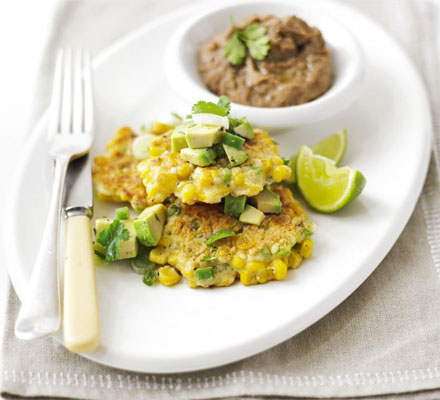

Corn cakes with
Corn cakes with
avocado salsa
Ingredients
- 50g self-raising flour
- 1 egg, beaten
- 200g canned or frozen sweetcorn
- bunch spring onions, trimmed and finely chopped
- 1 avocado, cut into small chunks
- 1 lime, ½ juiced and the rest cut into 4
- handful coriander leaves, chopped
- 1-2 tbsp vegetable oil
- refried beans, to serve